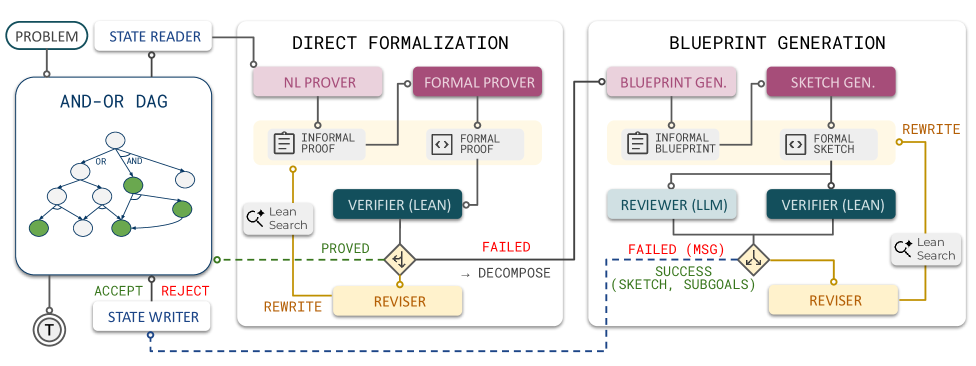

Presents an agentic framework that drives a general-purpose LLM to construct Lean proofs via compiler feedback, lemma decomposition, and LeanSearch retrieval.
Abstract
Large Language Models (LLMs) exhibit strong informal mathematical reasoning but struggle to generate mechanically verifiable proofs in formal languages like Lean. We present LEAP, an agentic framework that enables general-purpose foundation models to achieve state-of-the-art performance on automated formal theorem proving. LEAP leverages foundation model capabilities, such as informal reasoning, instruction following, and iterative self-refinement. By decomposing complex problems into smaller units, the system bridges formal proof construction with informal blueprints through continuous interaction with the Lean compiler. To provide a rigorous evaluation beyond increasingly saturated benchmarks, we introduce Lean-IMO-Bench, a benchmark of IMO-style problems formalized in Lean, with short statements yet highly non-routine and multi-step proofs across a wide range of difficulty levels. Empirically, on the latest 2025 Putnam Competition, an annual mathematics competition for undergraduate students in North America, LEAP solves all 12 problems, matching recent breakthroughs by frontier formal mathematical models. On Lean-IMO-Bench, LEAP boosts the one-shot formal solve rate of general-purpose LLMs from below 10% to 70%, notably surpassing the 48% benchmark set by a specialized, gold-medal-caliber IMO system. Furthermore, we demonstrate LEAP's research-level utility by autonomously formalizing complex proofs for open combinatorial challenges, including a verified proof for a key subproblem in Knuth's Hamiltonian decomposition of even-order Cayley graphs.
Problem
Large language models can reason informally about mathematics but struggle to produce mechanically verifiable proofs in formal languages like Lean. Existing automated theorem provers either fine-tune specialized models or fail on complex multi-step problems.
Approach
LEAP is an agentic framework that enables general-purpose foundation models to perform formal theorem proving by decomposing complex problems into a directed acyclic graph (DAG) of subgoals. The system generates informal blueprints, translates them into Lean proof sketches, and iteratively refines each node using compiler feedback and LeanSearch retrieval. LEAP maintains an AND-OR DAG where verified subgoals are added back only when dependencies remain acyclic. The framework leverages foundation model capabilities such as instruction following, iterative self-refinement, and informal reasoning to bridge the gap between natural language and Lean proofs.

Figure 1: LEAP workflow. LEAP first attempts direct formalization with compiler-feedback revision and LeanSearch [ leansearch ] retrieval. If this fails, it generates an informal blueprint and formal proof sketch, adding verified subgoals back to the DAG only when dependencies remain acyclic.
Results
On the 2025 Putnam Competition, LEAP solves all 12 problems (100%), compared to 75% for Aristotle and 33.3% for Hilbert. On the newly introduced Lean-IMO-Bench, LEAP achieves 83.3% on the Basic set and 56.7% on the Advanced set, surpassing Aristotle's 76.7% and 20.0% respectively. LEAP also autonomously formalized a key subproblem in Knuth's Hamiltonian decomposition, producing over 5000 lines of verified Lean 4 code.